Colour
2024-03-26
Plan
Scientific background
Discrete colour scales
Continuous colour scales
viridis colour
other palettes
custom colours
Spectrum
Spectrum
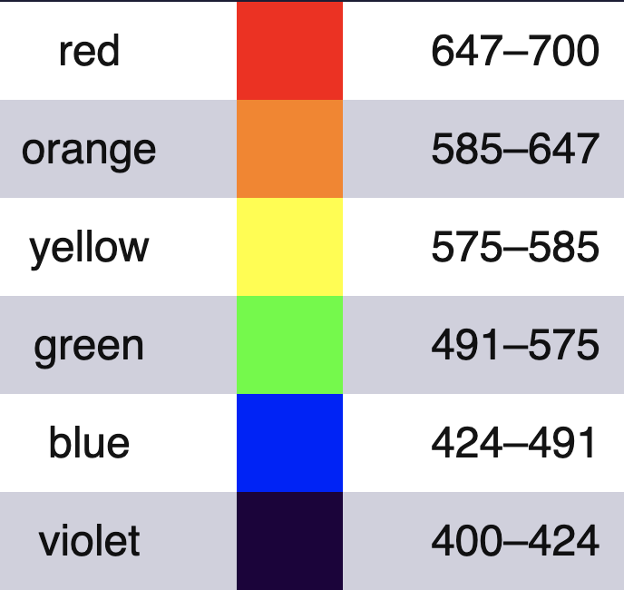
Colours we draw with
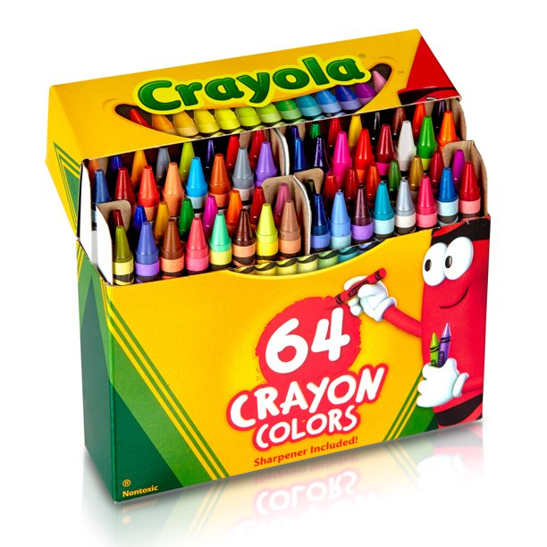
Crayola colors
Colors that exist in nature
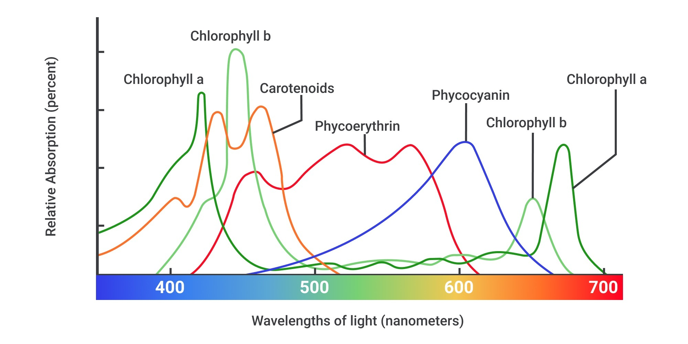
Figure 1: Pigments in nature
What your eye sees
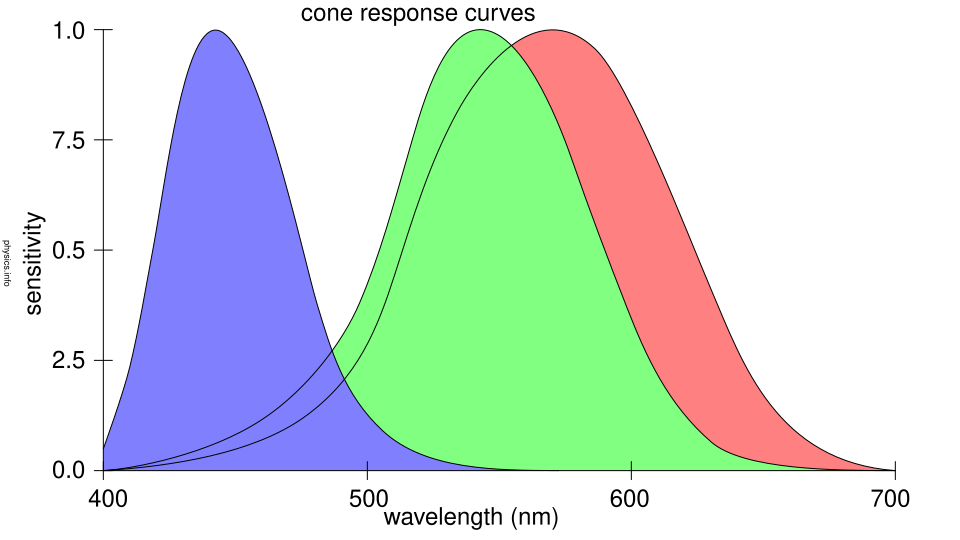
Figure 2: Response of cones in your eyes
What a computer screen creates
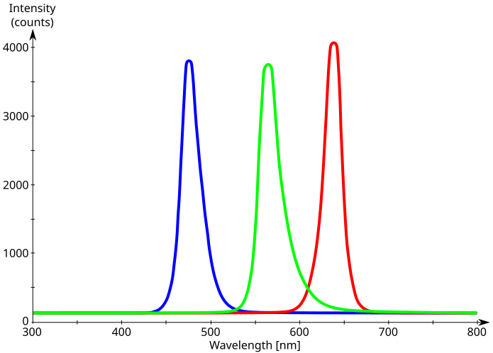
Figure 3: LED emission spectrum
Colors on a computer screen
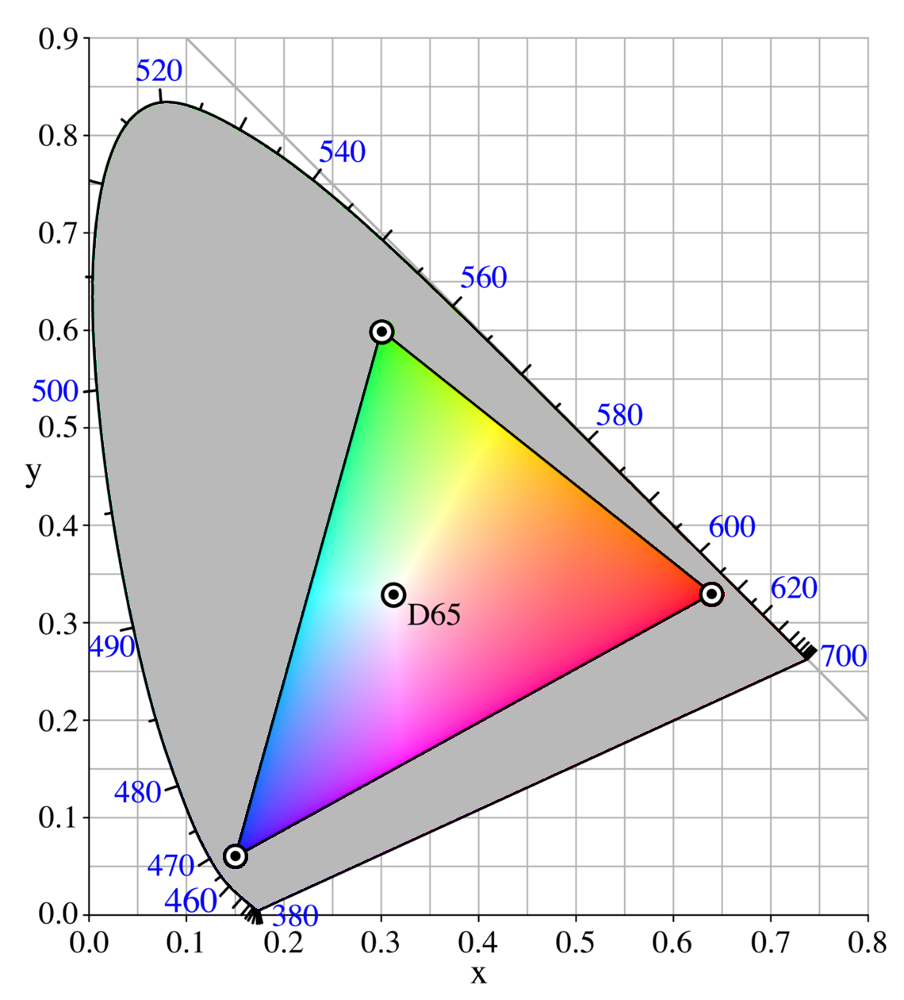
Figure 4: CIE model
Photo of screen

Photo of LCD screen with cell phone
Pixel geometry
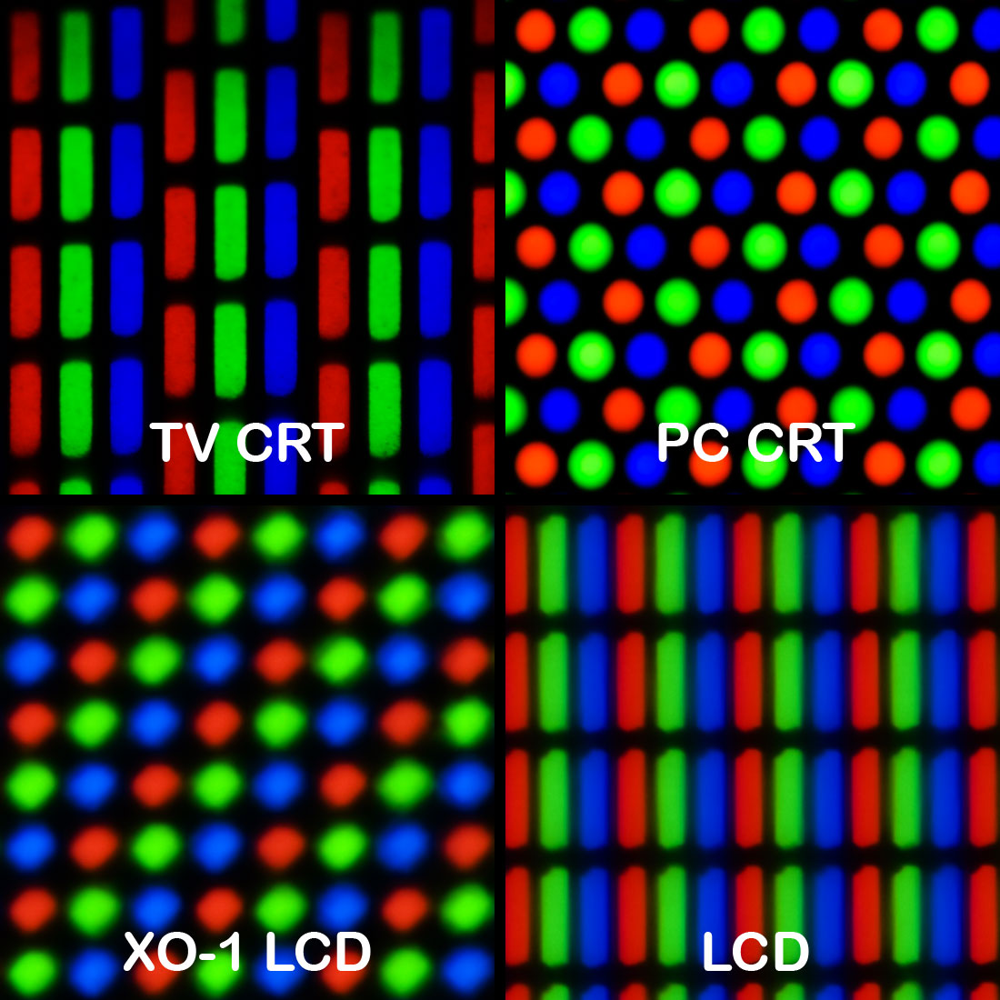
Wikipedia page for Pixel
Two models for creating colour
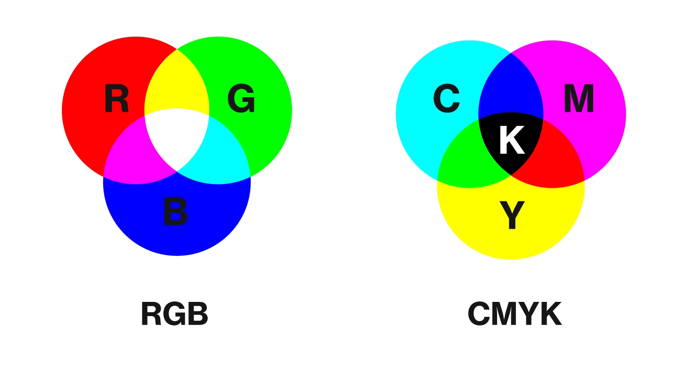
Figure 5: Creating colour models
Additive model
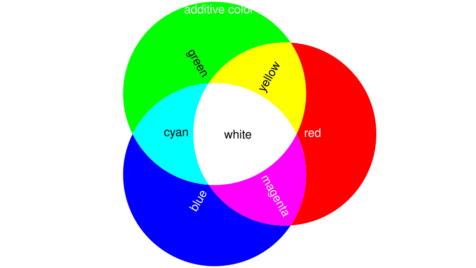
Figure 6: Additive
Subtractive model
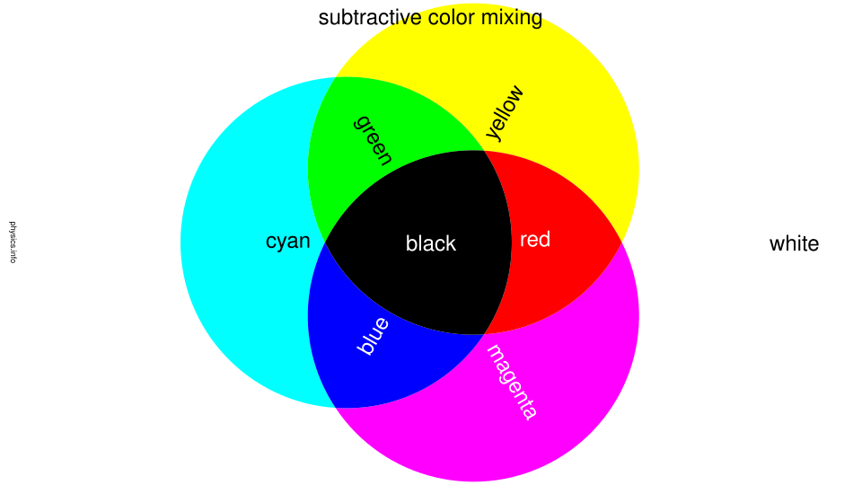
Figure 7: Subtractive
Colour guidelines - Discrete
Not too many
Keep brightness constant
Colour guidelines - Continuous
One shade, vary brightness
Two shades if there is a natural middle or 0, white in middle
Avoid red-green diverging scales
Discrete colour scales
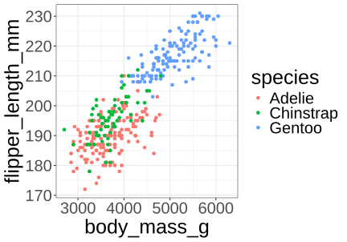
Discrete colour scales
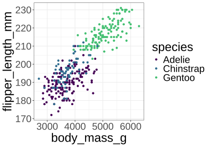
Discrete colour scales
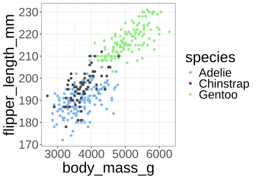
Discrete colour scales
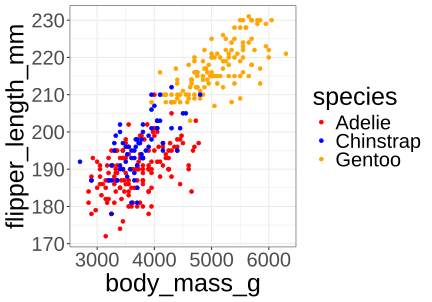
Continuous colour shades
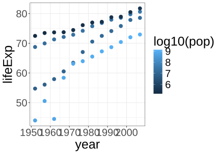
Continuous colour shades - diverging
p1 <- penguins |> mutate(body_mass_centered =
body_mass_g - mean(body_mass_g, na.rm=TRUE)) |>
ggplot(aes(flipper_length_mm, bill_length_mm,
color = body_mass_centered)) +
geom_point(size=3) + theme_bw() +
# scale_color_distiller(type="div", palette="RdBu", limits = c(-2000,2000))
scale_color_fermenter(type="div",
palette="RdBu",
limits = c(-2000,2000)) Continuous colour shades - diverging
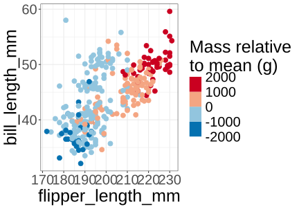
Make your own palette
coolors.co palette maker
Using custom colors
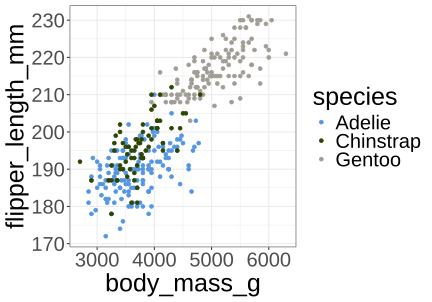
Further reading
Course notes
Healy and Wilke sections on colour
-
Blog posting on colour scales in data visualization
- https://blog.datawrapper.de/which-color-scale-to-use-in-data-vis/
-
Collection of palettes:
- https://r-graph-gallery.com/38-rcolorbrewers-palettes.html
- https://github.com/EmilHvitfeldt/paletteer
- https://github.com/EmilHvitfeldt/r-color-palettes